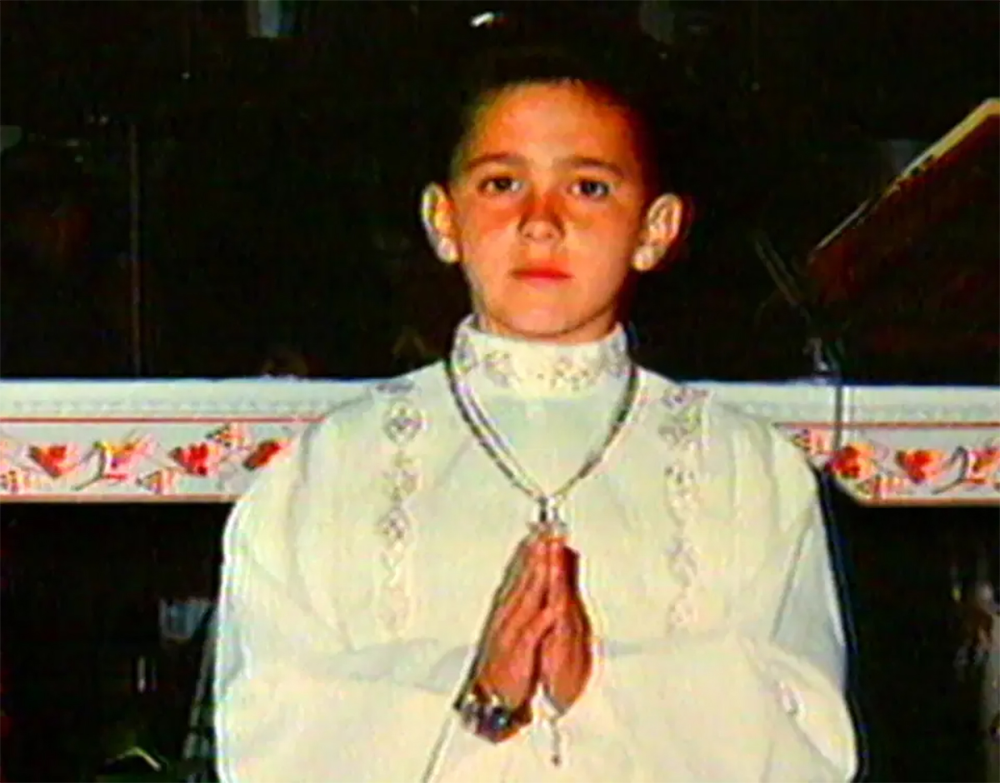

"Li avete uccisi ma non vi siete accorti che erano semi”.
Così scrive Pierpaolo Farina, ideatore di “WikiMafia - Libera enciclopedia sulle mafie”, che dedica una sezione del sito alla memoria e alle biografie delle vittime innocenti delle mafie.
Ad oggi, di queste, 122 sono minori (fra cui 85 bambini che non avevano ancora 14 anni).
Dal 21 marzo 1996, “Libera” l’associazione fondata da Don Ciotti, anch’essa nata per opporsi a queste organizzazioni criminali organizza, inoltre, la “Giornata della Memoria e dell’ Impegno” per ricordarle tutte.
LA REGOLA SECONDO LA QUALE I BAMBINI NON VANNO TOCCATI È SOLO UN FALSO MITO: LA MAFIA, INFATTI, NON SEGUE UN CODICE D’ONORE, SE NON QUELLO DEI PROPRI INTERESSI.
GIOVANI VITTIME INNOCENTI, UCCISE A FREDDO CON UN COLPO DI PISTOLA, COLPITE DA ESPLOSIONI E PROIETTILI, PER LA SOLA COLPA DI TROVARSI NEL POSTO SBAGLIATO AL MOMENTO SBAGLIATO, MA ANCHE SEQUESTRATE, DATE IN PASTO AI MAIALI, SCIOLTE NELL’ACIDO E BRUCIATE.
Nato a Palermo nel gennaio 1981, Giuseppe Di Matteo e’ morto a San Giuseppe Jato nel gennaio del 1996 per mano della mafia quando ancora non aveva compiuto 15 anni. Il suo omicidio fu deciso come ritorsione nei confronti del padre, il collaboratore di giustizia Santino di Matteo che, di fronte al rapimento del figlio, non aveva ritrattato le proprie dichiarazioni ai magistrati.
L'omicidio ebbe grande risonanza nell'opinione pubblica per le modalità spietate con cui fu eseguito e la freddezza dei suoi assassini: fu prima strangolato e poi il cadavere venne liquefatto in una vasca di acido nitrico.
Giuseppe era un bambino come tanti altri e aveva una grande passione per i cavalli. Suo padre, che aveva stretti rapporti con Giovanni Brusca, fu arrestato nel 1993 e poco dopo iniziò a collaborare con la giustizia, permettendo di arrivare a una svolta nelle indagini sulle stragi di Capaci e di via d’Amelio.
A novembre dello stesso anno, quattro uomini del clan dei Corleonesi, travestiti da poliziotti, adescarono il bambino all’uscita del maneggio che era solito frequentare, dicendogli che l’avrebbero portato dal padre.
Lo portarono invece in una villa nel Comune di Misilmeri, dove era stato allestito il bunker per la sua prigionia.

Nel frattempo il padre continuò a collaborare, ma nel dicembre 1993, preoccupato per l’incolumità del figlio, valutò la possibilità di interrompere la collaborazione per provare a salvarlo. Ad un certo punto allora decise di denunciare la scomparsa del figlio.
La notizia del rapimento divenne così di dominio pubblico.
Quando fu accusato di essere l’esecutore materiale di diversi omicidi grazie alla collaborazione di Santino, Brusca ordinò a Vincenzo chiodo, Giuseppe Monticciolo ed Enzo Brusca di uccidere il bambino.
Per l’omicidio del piccolo Giuseppe furono condannati all’ergastolo circa 100 mafiosi, tra cui Giovanni Brusca, LeoLuca Bagarella, Matteo Messina Denaro e molti altri. A Monticciolo furono comminati 20 anni di carcere, 30 ad Enzo Brusca, 21 a Chiodo e 12 anni a Gaspare Spatuzza.
Il casolare in Contrada Giambiascio nel territorio di San Giuseppe Jato, luogo di prigionia e dell’esecuzione del piccolo Giuseppe, confiscato alla criminalità divenne, da luogo di morte, un giardino della memoria dedicato al piccolo.
Da diversi anni vi si svolgono numerose iniziative per la promozione della legalità e dell’antimafia, con il coinvolgimento di associazioni locali, scolaresche e turisti.
NEL MESE DI NOVEMBRE 2023, DURANTE IL NOSTRO VIAGGIO CON L’ASSOCIAZIONE LIBERA ATTRAVERSO I TERRITORI CONFISCATI ALLA MAFIA, ABBIAMO VISITATO LA CANTINA “CENTOPASSI”, UN’AZIENDA VITIVINICOLA CHE SI TROVA A SOLI 20 MINUTI DAL GIARDINO DELLA MEMORIA E CHE COMPRENDE APPUNTO LE TERRE CONFISCATE AI BOSS DELLA MAFIA NELL’ALTO BELICE CORLEONESE.
Ogni anno l’11 gennaio si organizzano diverse iniziative nel comune di San Giuseppe Jato, nel tentativo di far capire ai ragazzi che il sacrificio del piccolo Giuseppe non è stato vano.
Il “Filo della Memoria”, così viene chiamata la giornata commemorativa in occasione dell’anniversario della sua uccisione, vuole appunto ricordare ogni azione compiuta nella direzione della legalità, della giustizia e della lotta contro la mafia e la violenza.
Come testimonia il sindaco di Palermo Leoluca Orlando: “Ricordare Giuseppe Di Matteo è un dovere civile, perché vuol dire ricordare la barbarie mafiosa e la storia di un bambino che amava la vita. Un sacrificio terribile che dev’essere uno stimolo affinché non si abbassi mai la guardia nei confronti di quella violenza criminale-mafiosa che ancora oggi condiziona tanti minori”.
Lavoro svolto da: Eleonora Bizzozero, Sofia Brenna, Eleonora Milcic, Giada Picozzi.